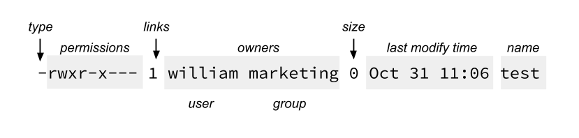

The UNIX operating system is built around the concept of a filesystem which is used to store all of the information that constitutes the long-term state of the system. This state includes the operating system kernel itself, the executable files for the commands supported by the operating system, configuration information, temporary workfiles, user data, and various special files that are used to give controlled access to system hardware and operating system functions. Every item stored in a UNIX filesystem belongs to one of four types:
The UNIX filesystem is laid out as a hierarchical tree structure which is anchored at a special top-level directory known as the root (designated by a slash '/'). Because of the tree structure, a directory can have many child directories, but only one parent directory. Fig. 2.1 illustrates this layout.
To specify a location in the directory hierarchy, we must specify a path through the tree. The path to a location can be defined by an absolute path from the root /, or as a relative path from the current working directory. To specify a path, each directory along the route from the source to the destination must be included in the path, with each directory in the sequence being separated by a slash. To help with the specification of relative paths, UNIX provides the shorthand "." for the current directory and ".." for the parent directory. For example, the absolute path to the directory "play" is /home/will/play, while the relative path to this directory from "zeb" is ../will/play.
Fig. 2.2 shows some typical directories you will find on UNIX systems and briefly describes their contents. Note that these although these subdirectories appear as part of a seamless logical filesystem, they do not need be present on the same hard disk device; some may even be located on a remote machine and accessed across a network.
| Directory | Typical Contents |
|---|---|
| / | The "root" directory |
| /bin | Essential low-level system utilities |
| /sbin | Superuser system utilities (for performing system administrative tasks) |
| /lib | Program libraries for higher-level user programs |
| /tmp | Temporary file storage space (can be used by any user) |
| /home | User home directories containing personal file space for each user. Each directory is named after the login of the user. |
| /etc | UNIX system configuration and information files |
| /dev | Hardware devices |
| /proc | A pseudo-filesystem which is used as an interface to the kernel. Includes a sub-directory for each active program (or process). |
When you log into UNIX, your current working directory is your user home directory. You can refer to your home directory at any time as "~" and the home directory of other users as "~<login>". So ~will/play is another way for user jane to specify an absolute path to the directory /homes/will/play. User will may refer to the directory as ~/play.
This section describes some of the more important directory and file handling commands.
pwd displays the full absolute path to the your current location in the filesystem. So
$ pwd
/usr/bin
implies that /usr/bin is the current working directory.
ls lists the contents of a directory. If no target directory is given, then the contents of the current working directory are displayed. So, if the current working directory is /,
$ ls
bin dev home mnt share usr var
boot etc lib proc sbin tmp vol
Actually, ls doesn't show you all the entries in a directory - files and directories that begin with a dot (.) are hidden (this includes the directories '.' and '..' which are always present). The reason for this is that files that begin with a . usually contain important configuration information and should not be changed under normal circumstances. If you want to see all files, ls supports the -a option:
$ ls -a
Even this listing is not that helpful - there are no hints to properties such as the size, type and ownership of files, just their names. To see more detailed information, use the -l option (long listing), which can be combined with the -a option as follows:
$ ls -a -l
(or, equivalently,)
$ ls -al
-rwxr-x--- 1 william marketing 0 Oct 31 11:06 test
Each line of the output looks like this:
where:
ls supports more options. To find out what
they are, type:
$ man ls
man is the online UNIX user manual, and you can use it to get help with commands and find out about what options are supported. It has quite a terse style which is often not that helpful, so some users prefer to the use the (non-standard) info utility if it is installed:
$ info ls
$ cd path
changes your current working directory to path (which can be an absolute or a relative path). One of the most common relative paths to use is '..' (i.e. the parent directory of the current directory).
Used without any target directory
$ cd
resets your current working directory to your home directory (useful if you get lost). If you change into a directory and you subsequently want to return to your original directory, use
$ cd -
$ mkdir directory
creates a subdirectory called directoryin the current working directory. You can only create subdirectories in a directory if you have write permission on that directory.
$ rmdir directory
removes the subdirectory directory from the current working directory. You can only remove subdirectories if they are completely empty (i.e. of all entries besides the '.' and '..' directories).
cp is used to make copies of files or entire directories. To copy files, use:
$ cp source-file(s) destination
where source-file(s) and destination specify the source and destination of the copy respectively. The behaviour of cp depends on whether the destination is a file or a directory. If the destination is a file, only one source file is allowed and cp makes a new file called destination that has the same contents as the source file. If the destination is a directory, many source files can be specified, each of which will be copied into the destination directory. Section 2.6 will discuss efficient specification of source files using wildcard characters.
To copy entire directories (including their contents), use a recursive copy:
$ cp -rd source-directories destination-directory
mv is used to rename files/directories and/or move them from one directory into another. Exactly one source and one destination must be specified:
$ mv source destination
If destination is an existing directory, the new
name for source (whether it be a file or a directory) will
be destination/source. If source and destination
are both files, source is renamed destination. N.B.: if destination
is an existing file it will be destroyed and overwritten by source
(you can use the -i option if you would like to be asked for confirmation
before a file is overwritten in this way).
$ rm target-file(s)
removes the specified files. Unlike other operating systems, it is almost impossible to recover a deleted file unless you have a backup (there is no recycle bin!) so use this command with care. If you would like to be asked before files are deleted, use the -i option:
$ rm -i myfile
rm: remove 'myfile'?
rm can also be used to delete directories (along with all of their contents, including any subdirectories they contain). To do this, use the -r option. To avoid rm from asking any questions or giving errors (e.g. if the file doesn't exist) you used the -f (force) option. Extreme care needs to be taken when using this option - consider what would happen if a system administrator was trying to delete user will's home directory and accidentally typed:
$ rm -rf / home/will
(instead of rm -rf /home/will).
$ cat target-file(s)
displays the contents of target-file(s) on the screen, one after the other. You can also use it to create files from keyboard input as follows (> is the output redirection operator, which will be discussed in the next chapter):
$ cat > hello.txt
hello world!
[ctrl-d]
$ ls hello.txt
hello.txt
$ cat hello.txt
hello world!
$
$ more target-file(s)
displays the contents of target-file(s) on the screen, pausing at the end of each screenful and asking the user to press a key (useful for long files). It also incorporates a searching facility (press '/' and then type a phrase that you want to look for).
You can also use more to break up the output of commands that produce more than one screenful of output as follows (| is the pipe operator, which will be discussed in the next chapter):
$ ls -l | more
less is just like more, except that has a few extra features (such as allowing users to scroll backwards and forwards through the displayed file). less not a standard utility, however and may not be present on all UNIX systems.
Direct (hard) and indirect (soft or symbolic) links from one file or directory to another can be created using the ln command.
$ ln filename linkname
creates another directory entry for filename called linkname(i.e. linkname is a hard link). Both directory entries appear identical (and both now have a link count of 2). If either filename or linkname is modified, the change will be reflected in the other file (since they are in fact just two different directory entries pointing to the same file).
$ ln -s filename linkname
creates a shortcut called linkname (i.e. linkname is a soft link). The shortcut appears as an entry with a special type ('l'):
$ ln -s hello.txt bye.txt
$ ls -l bye.txt
lrwxrwxrw 1 will finance 13 bye.txt -> hello.txt
$
The link count of the source file remains unaffected. Notice that the permission bits on a symbolic link are not used (always appearing as rwxrwxrwx). Instead the permissions on the link are determined by the permissions on the target (hello.txt in this case).
Note that you can create a symbolic link to a file that doesn't exist, but not a hard link. Another difference between the two is that you can create symbolic links across different physical disk devices or partitions, but hard links are restricted to the same disk partition. Finally, most current UNIX implementations do not allow hard links to point to directories.
Multiple filenames can be specified using special pattern-matching characters. The rules are:
Note that the UNIX shell performs these expansions (including any filename matching) on a command's arguments before the command is executed.
As we have seen certain special characters (e.g. '*', '-','{' etc.) are interpreted in a special way by the shell. In order to pass arguments that use these characters to commands directly (i.e. without filename expansion etc.), we need to use special quoting characters. There are three levels of quoting that you can try:
$ hostname
rose
$ echo this machine is called `hostname`
this machine is called rose